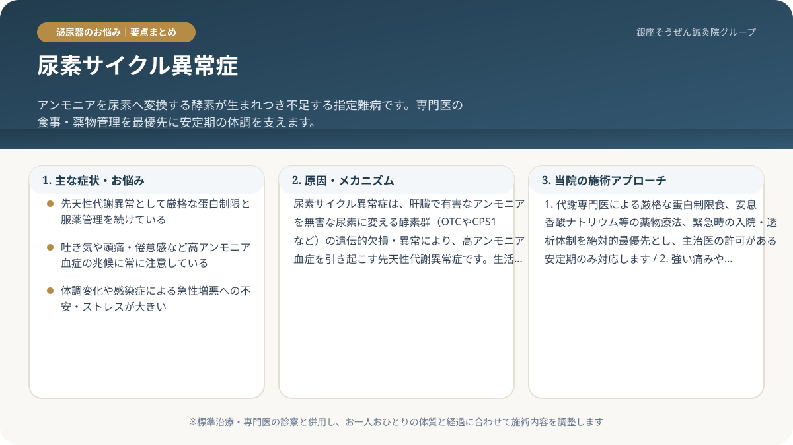

尿素サイクル異常症の鍼灸
アンモニアを尿素へ変換する酵素が生まれつき不足する指定難病です。専門医の食事・薬物管理を最優先に安定期の体調を支えます。
まず知っておきたい要点と改善の流れ

尿素サイクル異常症は、肝臓で有害なアンモニアを無害な尿素に変える酵素群（OTCやCPS1など）の遺伝的欠損・異常により、高アンモニア血症を引き起こす先天性代謝異常症です。生活習慣病ではなく、アンモニアの上昇により傾眠・嘔吐・意識障害・けいれんなど命に関わる急性発作や中枢神経障害を招くため、専門医での厳格な蛋白制限・アンモニア除去薬・救急対応が必須です。
このようなお悩みはありませんか？
- ✓先天性代謝異常として厳格な蛋白制限と服薬管理を続けている
- ✓吐き気や頭痛・倦怠感など高アンモニア血症の兆候に常に注意している
- ✓体調変化や感染症による急性増悪への不安・ストレスが大きい
- ✓安定期における慢性的な疲労感や肩こり・睡眠の乱れを整えたい
当院の施術アプローチ・改善の流れ
なぜ鍼灸で改善へ向かうのか？（作用機序の図解）
尿素サイクル異常症に対する鍼灸は、仙髄排尿反射（陰部神経）と骨盤底の協調調整機序を通じて、お体本来の回復力を引き出します。

膀胱・尿道括約筋を支配する仙髄神経（S2〜S4）領域の経穴へ的確にアプローチします。
弱まった骨盤底筋の収縮サポートと、過敏になった膀胱排尿筋の鎮静をバランスよく促します。
腰殿部と下腹部の血流を高め、冷えや過緊張による頻尿・違和感・痛みを和らげます。
泌尿器科の評価やセルフエクササイズと併用し、安心して外出できる日常の回復を支えます。
院長YouTube解説・関連動画
公開日：２０２１年 ９月 ２日
更新日：２０２４年 １月１１日
本日は尿素サイクル異常症について解説させていただきます。
☆本記事の内容
- •尿素サイクル異常症とは
- •尿素サイクル異常症の原因
- •尿素サイクル異常症の症状
- •尿素サイクル異常症の改善方法
- •尿素サイクル異常症のまとめ
- •尿素サイクル異常症は、尿素合成経路の代謝系に先天的な異常がある
- •尿素サイクル異常症の原因は、遺伝
- •尿素サイクル異常症の症状で、特に特徴的な症状はない
- •尿素サイクル異常症の主な改善方法は、食事と薬とアミノ酸
- •高アンモニア血症
銀座そうぜん鍼灸院の宗前です。
このページを書いている私は、鍼灸師として１３年、担当した利用者様数８０，０００人を誇り、病気の休職者３００人を社会復帰できるまで回復させてきた実績があります。
尿素サイクル異常症の症状で、特に特徴的な症状はない
尿素サイクル異常症の症状は、非常に様々です。特に特徴的な症状はなく、元気がないことや哺乳力の低下、多呼吸、吐き気や嘔吐、意識障害、痙攣など色々な症状が現れます。
長い間高アンモニア血症が続いたり繰り返したりした場合、中枢神経障害が起き、発達障害や行動異常、精神障害が起きることもあります。
アルギニノコハク酸尿症の場合髪の毛のねじれが見られることが多く、アルギニン血症やHHH症候群の場合小児期から両側麻痺が進むことが多いです。
尿素サイクル異常症は、体内でアンモニアが尿素に変換されるプロセスに影響を与える遺伝性の代謝異常です。この疾患群にはいくつかの異なるタイプがありますが、それらに共通する主な症状は以下の通りです。
高アンモニア血症：尿素サイクル異常症の最も重要な特徴であり、アンモニアの蓄積によるものです。高アンモニア血症は、神経系に影響を与え、昏睡や死に至る可能性があります。
神経系に関連する症状：嘔吐、頭痛、興奮状態、攻撃性、異常行動。進行すると、意識混濁、昏睡、けいれんが起こる可能性があります。
摂食困難と体重減少：特に乳幼児期に摂食困難や食欲不振が見られることがあります。これにより、体重増加の遅れや発育不全が生じることがあります。
呼吸困難：体がアンモニアを排除しようとする際に、呼吸が速くなることがあります（過換気症候群）。
筋緊張の低下または高まり：筋緊張の異常が見られることがあります。
肝機能障害：尿素サイクル異常症には肝臓が関与するため、肝機能障害が起こることがあります。
心理的、行動的な問題：特に長期的な影響として、注意欠陥・多動性障害（ADHD）、自閉症スペクトラム障害、学習障害などが見られることがあります。
尿素サイクル異常症の症状は、個人差が大きく、タイプや重症度によっても異なります。
尿素サイクル異常症の主な改善方法は、食事と薬とアミノ酸です。食事ではタンパク質の量を制限します。量を制限することによって、栄養障害を起こさないように注意して適切な量の設定をすることが大事です。
薬は、安息香酸ナトリウムとフェニル酪酸ナトリウムがあります。アンモニアを体の外に出すために薬を使います。
アミノ酸はアルギニンとシトルリンを使います。これは、尿素サイクル異常症の中でもアルギニンとシトルリンが不足してしまう疾患に対して行う改善方法です。
個人の症状に合わせて、肝移植を行ったり点滴や血液透析を行なったりすることもあります。
尿素サイクル異常症の改善では、アンモニアの蓄積を防ぎ、体内のアンモニアレベルを正常範囲内に保つことを目的としています。尿素サイクル異常症にはいくつかのタイプがあり、それぞれのタイプに応じた改善が必要です。
プロテインの制限：アンモニアはアミノ酸の代謝産物なので、食事に含まれるタンパク質の量を制限することで、アンモニアの産生を減らします。
特定のアミノ酸の補給：必要に応じて、アルギニンやシトルリンなどの特定のアミノ酸を補給します。
アンモニア除去薬：アンモニアの排出を促進する薬剤（例：ソジウムベンゾエート、ソジウムフェニル酪酸）を使用します。
抗凝固薬：アンモニアレベルが高い場合、抗凝固薬が処方されることがあります。
・アンモニアの急性発作
重篤なアンモニアの蓄積がある場合は、入院して集中的な改善が必要になります。血液透析や血漿交換を行うことで、迅速に体内のアンモニアを除去します。
・長期的な管理
定期的な血液検査によるアンモニアレベルのモニタリングや肝機能や神経系の機能の評価。
・肝移植
一部の重篤な尿素サイクル異常症の場合において、肝移植が最終的なオプションとして検討されることがあります。
尿素サイクル異常症の改善では、個々の状態や症状の重さに応じて個別化されます。早期の判断と改善の開始は、重篤な合併症を防ぐために非常に重要です。
尿素サイクル異常症の薬での改善は、体内でのアンモニアの産生を減少させ、蓄積されたアンモニアの排泄を促進することを目的としています。以下は、尿素サイクル異常症の改善に使用される主な薬剤とその特徴です。
・アンモニア除去薬
ソジウムベンゾエート：体内でアンモニアと結合し、尿中に排泄されるベンゾイルグリシンを形成します。
ソジウムフェニル酪酸：体内でフェニルアセチルグルタミンに変換され、アンモニアを尿中に排泄させます。
ソジウムフェニルブチレート：ソジウムフェニル酪酸と同様に機能し、薬剤の形態が異なります。
・アルギニン補給
アルギニンは尿素サイクルに必要なアミノ酸であり、一部のUCD患者にはアルギニンが不足しています。アルギニンの補給は、体内のアンモニアの排泄を促進するのに役立ちます。
・シトルリン補給
特定のタイプのUCD（例：オルニチントランスカルバミラーゼ欠損症）では、シトルリンの補給が有効です。シトルリンは尿素サイクルにおいて重要な中間体であり、アンモニアの排泄を促進します。
・ビタミンとミネラルの補給
特定のビタミンやミネラル（例：ビタミンB群、亜鉛）の補給が必要な場合もあります。
・抗凝固薬
高アンモニア血症が血栓形成のリスクを高める場合、抗凝固薬が使用されることがあります。
これらの薬剤は、状態や尿素サイクル異常症のタイプに応じて医師によって処方されます。重要なのは、アンモニアレベルを継続的に監視し、必要に応じて改善を調整することです。また、食事や場合によっては血液透析などの他の方法との併用が必要な場合があります。専門医の指導のもとで進めることが重要です。
高アンモニア血症が続くと、中枢神経障害を起こしてしまいます。そのため、アンモニアのもとになる蛋白質を制限することが大切になります。しかし、蛋白質が足りなくなると皮膚炎や毛髪の脱色や脱毛、脂肪肝につながることもあります。
蛋白質をとる量は適切にコントロールすることが非常に大切なのです。蛋白質を制限しようとすると、鉄やカルシウムやビタミンなどの他の栄養素も足りなくなってしまうことが多いです。注意しましょう。
尿素サイクル異常症を発症したら、アンモニアを早めに測って高アンモニア血症を早く発見して改善を行うことが大切なのです。
腎・泌尿器・排尿トラブル・透析サポートのツボ図解
実際の施術ではお一人おひとりの体質・症状に合わせて選穴しますが、過活動膀胱・尿失禁・前立腺症状・CKD/透析QOLの標準治療併用ケアの臨床でよく用いられる代表的なツボの目安です。

📌 代表的なツボの詳細一覧表を開く（6穴） ▼
| ツボ名 | 位置の目安 | 主な狙い | セルフケアの注意点 |
|---|---|---|---|
| 腎兪（じんゆ） | 腰のくびれの高さ、背骨から指2本分外側 | 腎・泌尿器周囲の自律神経と冷え・倦怠感ケア | 腰部を温めることで夜間頻尿の負担も和らぎます。 |
| 次髎（じりょう） | 仙骨の2番目のくぼみ（お尻の上中央付近） | 仙髄排尿神経（S2〜S4）を介した膀胱機能調整の最重要穴 | 腹圧性・切迫性尿失禁や過活動膀胱の国際RCTでも定番です。 |
| 関元（かんげん） | おへそから指4本分下 | 下腹部の冷え改善・骨盤内の循環サポート | 排尿を済ませた状態で優しく温めます。 |
| 中極（ちゅうきょく） | 恥骨のすぐ上、おへそから指5本分下 | 膀胱の過敏性・残尿感・頻尿の調整 | 強く押し込まず軽く手を当てる・温める程度にします。 |
| 三陰交（さんいんこう） | 内くるぶしの上から指4本分上 | 脛骨神経を介した膀胱過活動の鎮静・睡眠の質改善 | 透析中の方はシャント腕を避け非透析日に安全に行います。 |
| 太渓（たいけい） | 内くるぶしとアキレス腱の間 | 腎経の原穴として冷え・むくみ・夜間頻尿の土台づくり | 足首を冷やさない工夫と合わせてケアします。 |
国際査読論文の科学的エビデンス
国際的な医学データベース（PubMed・Cochrane等）で報告されている過活動膀胱・尿失禁・前立腺症状・CKD/透析QOLの標準治療併用ケア領域の代表的な査読済み鍼灸研究をまとめています（標準治療との併用や研究上の限界を含めて正確に掲載）。
📚 査読論文データ・PubMed出典リンクを開く（4件） ▼
| 年・研究デザイン | 対象・規模 | 主な結果 | 限界・出典 |
|---|---|---|---|
| 2017年 大規模多施設RCT | 腹圧性尿失禁女性 504名（12病院・腰仙部電鍼） | 6週時の1時間パッド尿漏れ量は電鍼-9.9g vs シャム-2.6g（差7.4g, P<0.001）、30週まで失禁減少持続。 | 30週以降の長期持続は今後の検証課題。 JAMA (PMID: 28655016) |
| 2021年 大規模多施設RCT | 慢性前立腺炎/CPPS男性 440名（10病院） | 8週時のレスポンダー率60.6% vs シャム36.8%（OR 2.6, P<0.001）、32週時点でも61.5% vs 38.3%持続。 | 細菌性前立腺炎・悪性疾患の除外が前提。 Ann Intern Med (PMID: 34399062) |
| 2022年 Cochraneレビュー | 過活動膀胱 15研究（n=1,395） | 薬物比較で症状改善率RR 1.25・軽度有害事象減少（RR 0.34）・夜間頻尿減少。重篤な有害事象なし。 | シャム比較では不確実、GRADE低〜非常に低。 Cochrane (PMID: 36148895) |
| 2023年 メタ解析 | 過活動膀胱 30研究統合 | シャム比較でOABSS有意改善（MD -1.13, P=0.01）、薬物併用でOABSS MD -2.28（P<0.00001）。 | 異質性が高く（I²=67〜94%）、GRADE低〜非常に低。 Front Neurol (PMID: 36712423) |
参考文献・出典
- 2017年 大規模多施設RCT（腹圧性尿失禁女性 504名（12病院・腰仙部電鍼））— JAMA (PMID: 28655016)
- 2021年 大規模多施設RCT（慢性前立腺炎/CPPS男性 440名（10病院））— Ann Intern Med (PMID: 34399062)
- 2022年 Cochraneレビュー（過活動膀胱 15研究（n=1,395））— Cochrane (PMID: 36148895)
- 2023年 メタ解析（過活動膀胱 30研究統合）— Front Neurol (PMID: 36712423)
よくある質問（FAQ）
Q. 少しだるいときや頭痛があるときに鍼灸で整えてもらえますか？▼
Q. 安定期に鍼灸を受ける目的は何ですか？▼
あわせて読まれる関連疾患（泌尿器のお悩み）
フェニルアラニン代謝酵素の不足による指定難病です。生涯の低フェニルアラニン食と専門医管理を最優先に安定期の心身を支えます。
分岐鎖アミノ酸の代謝障害により尿に甘い臭いが生じる指定難病です。厳格な食事療法と専門医管理を最優先に安定期を支えます。
アミノ酸代謝酵素の欠損によりホモシスチンが蓄積する指定難病です。専門医の食事・薬物管理を最優先に安定期の体調を支えます。
腎臓の糸球体に異常なIgAが沈着して炎症が続く指定難病です。腎臓専門医の管理を最優先に、安定期の体調維持を優しく支えます。
爪や膝蓋骨・肘の形成異常と腎症・緑内障を伴う指定難病です。専門医管理を最優先に、関節周囲の負担と体調を優しく支えます。
IV型コラーゲン異常により腎炎・難聴・眼症状を伴う遺伝性の指定難病です。専門医管理を最優先に安定期の体調を支えます。
CLINICAL RECOVERY CASES
✨ 実際の臨床改善事例・回復経過を見る
銀座本院をはじめ各院での実際の改善事例を症状別に絞り込んでご確認いただけます。
おひとりで悩まず、まずはご相談ください
銀座本院・川口・大宮・横浜・博多・田無の各院でご予約を承っております。